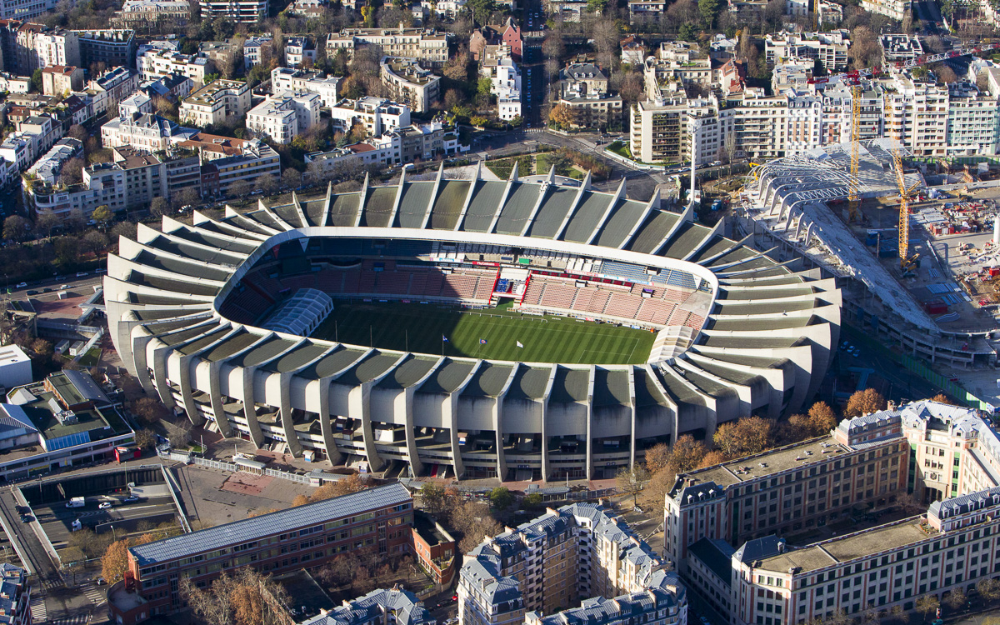

Bienvenue sur le site officiel du PSG
Le Paris Saint-Germain voit le jour en 1970 lors de la fusion entre la section football du Stade saint-germanois, club fondé en 1904, et le Paris Football Club, club virtuel sans stade ni équipe créé dix-huit mois auparavant dans le but de redonner une équipe professionnelle à la capitale, après la chute du Racing Club de France et du Stade français.

Notre Palmares
- Compétitions nationales : Champion de France (Ligue 1) : 13 titres (1971, 1986, 1994, 2013, 2014, 2015, 2016, 2018, 2019, 2020, 2022, 2023, 2024, 2025) , Coupe de France : 16 victoires , Coupe de la Ligue : 9 victoires , Trophée des champions : 13 victoires
- Compétitions internationales : Ligue des champions (C1) : 1 victoire (2025) , Supercoupe de l'UEFA : 1 victoire (2025) , Coupe des vainqueurs de coupe (C2) : 1 victoire (1996)
Boutique officiel